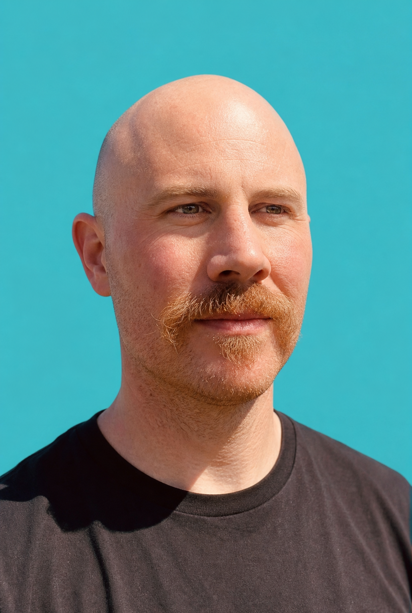

The information exists. Action still waits on one person.
Critical context lives across systems and staff memory, creating dependency, delay, and decisions that are difficult to repeat.
I design and build operational systems that connect software, business data, and AI around the way a team actually works.
For businesses whose work is trapped across software, spreadsheets, documents, and staff memory, I turn scattered information into clear operating views, repeatable workflows, and tools people can actually use.

James Mason · Founder / Operator / BuilderThese are the signals that usually mean the business needs an operating system around its work, not another dashboard or disconnected tool.
Critical context lives across systems and staff memory, creating dependency, delay, and decisions that are difficult to repeat.
Teams spend time reconciling the view instead of acting on it, while leaders make decisions without a trusted picture of the work.
Follow-up depends on someone remembering to look, so revenue, service, and risk opportunities become visible only in hindsight.
The process worked while talented people could hold it together. More volume, locations, and complexity make that dependence impossible to sustain.
Before deciding what to buy, configure, or build, I work to understand how decisions are made, how information moves, where work breaks down, and what teams need to perform well.
From there, the technology choices become clearer. The core systems, the experience of the people using them, and the company’s access to its own information can be designed together rather than treated as separate problems.
The goal is an operating environment that makes the work clearer, improves the quality and speed of decisions, and can keep evolving as the organization changes.
I design the layer around those platforms: how information is assembled, how work is routed, what each role needs to see, and where intelligence improves judgment. The software changes. The architectural problem is consistent: connect systems of record to the decisions and actions that move the operation forward.
This pattern became a custom operating interface replacing Salesforce across seven global support sites. I led frontline discovery, translated the work into product requirements, supported rollout and adoption, and later returned to help add an LLM-based knowledge layer.
Create a shared representation of what is happening now, what has changed, and what requires attention across people and systems.
Translate business rules and workflow context into clear ownership, routing, follow-up, and role-specific guidance.
Use AI to prioritize, retrieve, draft, and monitor where it improves judgment without obscuring accountability.
Before starting Nobo, I spent more than a decade in operations and program leadership at Stripe, Lyft, and car2go, a Daimler company. My work ranged from designing operating models for distributed teams to leading company-level programs across product, engineering, operations, risk, and customer experience.
At Stripe, I led programs with executive-level accountability and worked directly on the systems behind large-scale operations.
I founded Nobo to bring that combination of operational leadership and hands-on systems design directly to growing organizations.